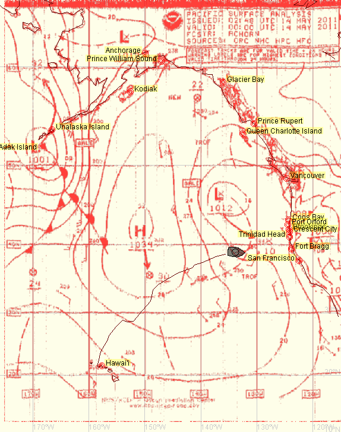
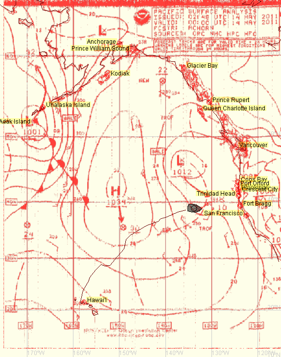
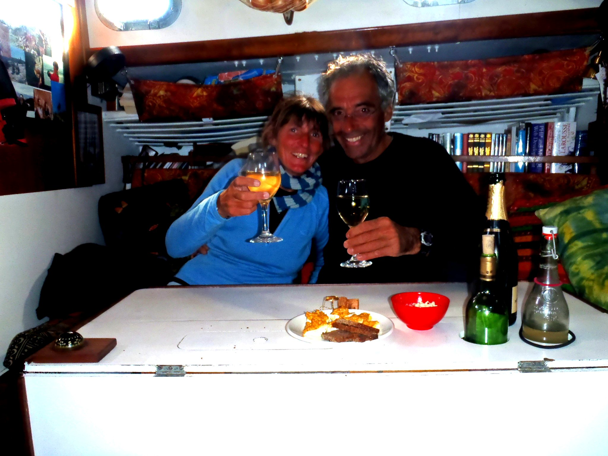

Nice night with no clouds. Clouds come back near sunrise, with a little bit of rain.
A red footed bobby comes to visit us - and poop on the solar panel.
We cross the Tropic at 6:15 pm.
The wind drops to almost nothing after nightfall, during about one and half hour. It comes back after
that, lifting a bit.
Nice night with no clouds. Clouds come back near sunrise, with a little bit of rain.
A red footed bobby comes to visit us - and poop on the solar panel.
We cross the Tropic at 6:15 pm.
The wind drops to almost nothing after nightfall, during about one and half hour. It comes back after
that, lifting a bit.
Some albatross are circling the boat. Two species, one that is all black, and another one - like the ones we've seen in the west part of O'Ahu - white.

 Calm day today, but still progressing.
Calm day today, but still progressing.
No wind at 1 pm... And we don't want to use the engine too much, we'll deal with the calm.
Some wind seems to come back around 4 pm, it seems we've crossed this trough between the two high pressures (see fax).
The night is beautiful this evening.
Wind remains light during the rest of the day, but at least, there is wind.
 Still the same kind of weather. There is a light current, taking us North.
Still the same kind of weather. There is a light current, taking us North.
 Light winds...
Light winds...
 We are in some kind of convergence zone - that rings a bell - between two high pressures.
We are in some kind of convergence zone - that rings a bell - between two high pressures.
Clouds, changing light winds, some kinds of squalls, that looks indeed a lot like the ITCZ, with the air temperature a bit lower though.
There is a lot of debris in the water, mostly fishing gears (lines, nets, floats, all kind of crap).
Albatross are still visiting us every day.
around noon.
It comes back around 10:30 am..., and the weather clears up. This is still light, but we're moving.
We're still expecting the wind to shift West.
The wind drops completely in the afternoon, no wind at all. Sails are flapping, we roll up the yankee to preserve it.
Drizzle, like in Britanny.
Then the wind drops again, shifts, picks up, drops again... at 4 pm. The wind is oscillating around the North.
Some wind comes, from the West, finally!
But that is still light. We carry , to limit the flapping.
At 10 am, the boat speed is over two knots! Wow!
Albatross are still coming to see us, every day. They circle the boat a couple of times, and then go somewhere else...
At 6 pm, we put , just for the balance, we are doing 6 knots, unbelievable!
And it is cold! The water is now at 13°C (55°F), the air temperature along those lines too, and with the wind, it feels like freezing.
But we've done 130 miles during the last 24 hours.
 Less wind, from the West-North-West.
Less wind, from the West-North-West.
There is an annoying swell from North West, painful.
The wind is shifting W¼NW, we gybe. This way, the swell is not that boring.
Gybed again at 6 pm, heading North-East.
The sea is just a big mess.
Lines of squalls, and the weather is bloody cold! We're having about 5 Beaufort, from the West.
The wind is reaching about 30 knots in the squalls.
 
We're dealing with a trough, not clearly anticipated by the GRIBs. Again, the faxes remain the point of
truth.
We have squalls back to back, the wind between 0 and 30 knots, it's tiring.

We're dealing with a trough, not clearly anticipated by the GRIBs. Again, the faxes remain the point of
truth.
We have squalls back to back, the wind between 0 and 30 knots, it's tiring.
In the evening, we're carrying only the , this way it is easier for the autopilot. We're still doing 5 knots.
At 5 am, the barometer begins to go up again, and the wind shifts North-North-West. That means we are sailing along the lower part of this trough.
We now carry .
 We are now anticipating a second low pressure, deeper than the trough we just went through.
We are now anticipating a second low pressure, deeper than the trough we just went through.
There is a trough just in front of us, combined with the low pressure that is approaching, it's going to be interesting.
The wind is shifting South-South-East, meaning the low is in our south. We are heading North-East, trying to put some distance between the low and us. at 1:20 am.
at 3:20 am, the wind keeps increasing. Heavy rain.
At 6 am, the wind blows 8 Beaufort, we decide to drop the staysail (the brand new lovely one) to replace it with the storm staysail. That would be really too bad to explode it. Just after having droppped it, ready to set the storm one, we see that the boat behaves quite nicely bare poles; let us stay a bit like that!
at 6:20 am, wind blowing from East-South-East, a steady 8, with gusts at 9 Beaufort.
This is not too bad, it is noisy but not as uncomfortable we would have imagined. Just after dropping the staysail, we cooked some pancakes. After that, we went to our bunks, to take some rest.
The barometer begins to go back up again in the afternoon.
We put back en route at 2:45 pm, .
We did about 12 miles lying ahull, we were drifting at about 1 ½ knot.
As expected, the wind shifts North, and drops a bit.
Albatross are still there.
Albatross, shearwaters, and petrels around us.
The yankee has been damaged close to its clew, probably when flapping in the calms..., we'll try to save it.
 We're doing good. The autopilot is driving. The weather is still cold, but it is sunny today.
We drop the main at 1:30 pm, the autopilot was having a hard time.
We're doing good. The autopilot is driving. The weather is still cold, but it is sunny today.
We drop the main at 1:30 pm, the autopilot was having a hard time.
We've seen a couple of ships.
And we restart the heater, on a small tank, it's rapidly warm and dry inside the boat.
On top of that, Corine had saved a bottle of champagne. Cheers!
We got it when we put the hand in the water, it was at 48°F (9°C).
